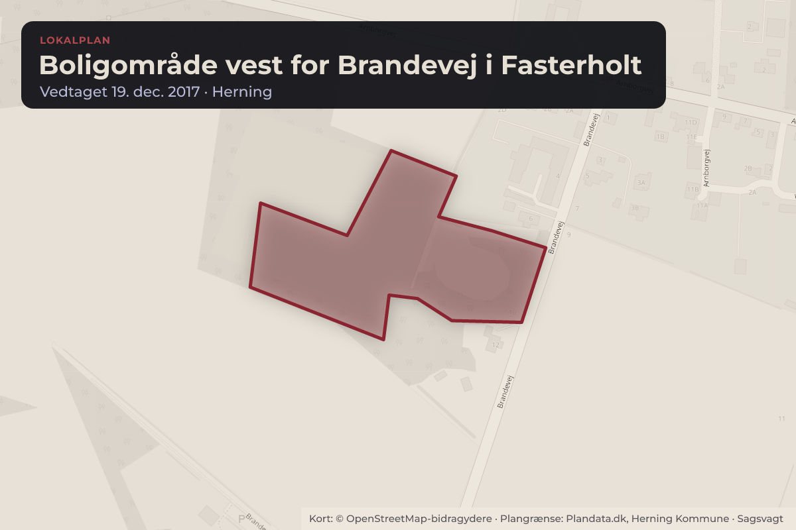
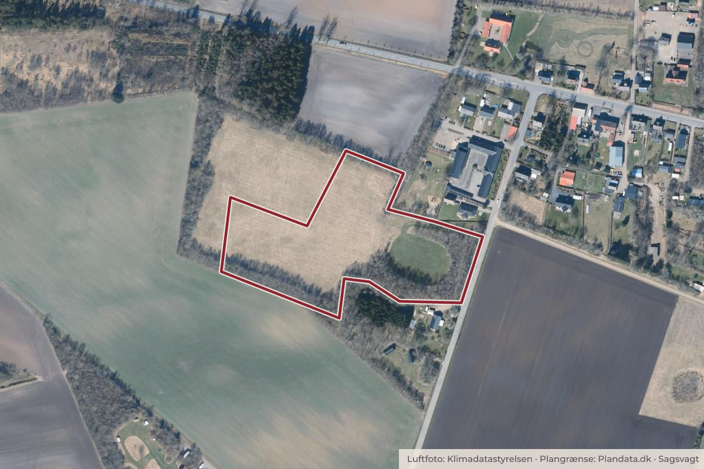

Behandlet 2. november, Økonomi-, Erhvervs- og Uddannelsesudvalget, Herning
Endelig vedtagelse af lokalplan for boligområde ved Brandevej, Fasterholt
Herning Byråd har på mødet den 22. juni 2026 foreløbig vedtaget forslag til lokalplan 73.B5.2 for boligområde ved Brandevej i Fasterholt. Lokalplanens formål er at muliggøre etablering af et blandet boligområde af både åbenlav og tæt-lav karakter.
Bydele i sagen: Fasterholt
Steder i sagen: Brandevej

Kort: © OpenStreetMap-bidragydere. Plangrænse: Plandata.dk, Herning Kommune.

Kort fortalt
- Hvem
- Økonomi-, Erhvervs- og Uddannelsesudvalget, Herning Kommune
- Hvornår
- Mandag 2. november 2026
- Status
- Behandlet. Referatet med beslutningen er ikke offentliggjort endnu.
Læs hele sagen Kommunens egen tekst
Sagsfremstilling
Baggrunden for lokalplanens udarbejdelse er, at Herning Byråd i 2023 tildelte kvoter til almene
boliger i Fasterholt. Efterfølgende har Lejerbo ønsket at opføre tæt-lav bebyggelse til almene
boliger ved Brandevej i Fasterholt. Da det konkrete projekt omfatter tæt-lav bebyggelse, og den
gældende plangrundlag kun muliggør åben-lav bebyggelse, er projektet ikke i
overensstemmelse med det gældende planlægning for området.
For at udvikleren kan realisere projektet for almene boliger, er der udarbejdet en ny lokalplan
og et ledsagende kommuneplantillæg til Herning Kommuneplan 2025-2036.
Lokalplanområdet
Lokalplanområdet ligger i den sydvestlige del af Fasterholt ved Brandevej. Området udgør et
areal på ca. 3 ha. og omfatter matrikel nr. 37ao og 37z Gl. Arnborg By, Arnborg.
Lokalplanområdet grænser mod nord op til den tidligere skole i Fasterholt, dyrkningsarealer,
skov og ét fritliggende enfamiliehus. Mod vest og syd grænser området op til dyrkningsarealer
og ét fritliggende enfamiliehus og mod øst afgrænses området af Brandevej.
Området er i dag udlagt til boligområde, men står ubebygget.
Lokalplanens indhold
Lokalplanen fastlægger rammerne for områdets anvendelse. Herudover fastlægges rammerne
for bebyggelsens udformning og materialitet, fri- og opholdsarealer samt beplantning.
Lokalplanen fastlægger yderligere bestemmelser for håndtering af regnvand.
Disposition og bebyggelse
Lokalplanområdets disponering tager udgangspunkt i områdets eksisterende anvendelse til
friarealer og rekreative områder. Disse arealer og deres rekreative funktion ønskes sikret med
lokalplanen.
Lokalplanområdet opdeles i to delområder.
Delområde I omfatter grønne friarealer. Delområdet må ikke bebygges, men der kan etableres
mindre sekundær bebyggelse, som understøtter områdets anvendelse til rekreative formål,
ophold og leg.
Inden for delområde II kan der opføres boligbebyggelse af tæt-lav og åben-lav karakter, i op til
to etager og en maksimal højde på 8,5 meter. Bebyggelsesprocenten fastsættes til maksimalt
40 for tæt-lav og 30 for åben-lav. Yderligere skal der inden for delområdet etableres vejadgang
fra Brandevej.
Landskab og natur
De eksisterende læbælter mod det åbne land bevares, hvorfor lokalplanen udlægger arealerne
som fællesareal, hvor der ikke må ske udstykning til boligformål. Langs fællesarealet skal der
etableres en trampesti til gåture i området samt være adgangsvej til vedligeholdelse og drift af
beplantningen mod det åbne land.
Regnvandshåndtering
Lokalplanen fastsætter bestemmelser, der skal sikre en hensigtsmæssig håndtering af regnog overfladevand. Terrænregulering og bebyggelse må ikke forringe eller afbryde de
eksisterende strømningsveje ind og ud af lokalplanområdet. Den eksisterende fælles
lavningsvolumen, som findes før byggemodning, skal bevares og kan placeres i eksisterende
lavninger eller indarbejdes i grønne arealer, vejarealer, grøfter eller lignende.
Regnvand fra boliger skal håndteres på egen grund ved nedsivning, eksempelvis i faskiner
eller overfladeløsninger. Lokalplanen giver desuden mulighed for etablering af grøfter, kanaler,
regnbede og lignende anlæg til lokal nedsivning og forsinkelse af regn- og overfladevand.
Grundvand
Lokalplanen indeholder bestemmelser til beskyttelse af grundvandet, herunder krav om
grundvandsbeskyttende materialer og tætte belægninger, da en del af lokalplanområdet ligger
inden for et område med særlige drikkevandsinteresser. Lokalplanen vurderes ikke at stride
mod grundvandsinteresserne, da den alene muliggør boliger og rekreative arealer.
Offentlig høring
Lokalplanforslaget har været i offentlig høring fra den 2. juli 2026 til den 11. august 2026,
begge dage inklusiv. Der er i høringsperioden ikke indkommet indsigelser til planforslaget.
Vejnavn
I forbindelse med den offentlige høring, er der blevet efterlyst forslag til vejnavn for området.
Der er i høringsperioden ikke indkommet nye forslag til vejnavn.
Forvaltningen indstiller derfor, at vejnavnet for lokalplanområdet bliver Moselundvej, som
foreslået af forvaltningen i forbindelse med den foreløbige vedtagelse. Alternativt foreslår
forvaltningen Moselundsvej. Navnet tager udgangspunkt i den nærliggende ejendom Moselund
og får derved en lokal forankring og tilknytning til det eksisterende område.
Forslag til ændringer i lokalplanen
I forbindelse med den endelige vedtagelse af lokalplanen foreslår forvaltningen en række
mindre ændringer til lokalplanens kortbilag, bestemmelser og redegørelse.
Ændringerne har til formål at sikre hensigtsmæssige forhold for den fremtidige drift og
vedligeholdelse af de eksisterende læhegn, som omkranser området og udgør et væsentligt
landskabeligt element i området.
Forvaltningen foreslår derfor, at der på lokalplankortet indtegnes en drifts- og
vedligeholdelseslinje langs fællesarealerne. Linjen fastlægger et areal på to meters bredde, der
skal friholdes for bebyggelse, anlæg og udstykning, så der fortsat er adgang til drift og
vedligeholdelse af læhegnene.
Forslag til revideret lokalplankort
Som følge heraf foreslås mindre justeringer af lokalplanens bestemmelser. Ændringerne
præciserer blandt andet anvendelse af trampestien og sikrer at arealet mellem fællesarealerne
og drifts- og vedligeholdelseslinjen friholdes. Herudover foreslås redegørelsen opdateret, så
den afspejler de foreslåede ændringer.
Ændringerne har til formål at sikre forhold omkring drift og vedligeholdelse, og ændrer ikke
lokalplanens overordnede anvendelse eller områdets disponering.
Desuden foreslår forvaltningen at illustrationsplanen, der fremgår af lokalplanens redegørelse
på side 7, opdateres med en revideret version modtaget fra udvikler. Opdateringen medfører
ikke ændringer i lokalplanens indhold, da illustrationsplanen udelukkende har en illustrativ
karakter og kun har til formål at vise et muligt eksempel på disponering af tæt-lav bebyggelse til
almene boliger.
Opdateret illustrationsplan for mulig disponering af almene boliger
Indstilling
BYPLAN- OG BOSÆTNINGSUDVALGET INDSTILLER,
at forslag til lokalplan 73.B5.2 for boligområde ved Brandevej i Fasterholt endelig
vedtages med følgende ændringer:
at illustrationsplanen, der fremgår af lokalplanens redegørelse på side 7, opdateres med
revideret illustrationsplan fra udvikler,
at det reviderede lokalplankort med indtegnet drifts- og vedligeholdelseslinje godkendes,
at lokalplanforslagets §4.11 ændres til: "Der skal, langs det på kortbilag 2 viste
fællesareal jf. § 9.6, etableres en trampesti til gåture i området. Trampestien må
anvendes i forbindelse med drift og vedligehold af fællesarealerne."
at der i lokalplanforslagets §5.6 tilføjes: " ...samt i området mellem fællesarealet og den
på kortbilag 2 viste drifts- og vedligeholdelseslinje"
at der i lokalplanforslagets §9.1 tilføjes: " ...eller i området mellem fællesarealet og den på
kortbilag 2 viste drifts- og vedligeholdelseslinje"
at lokalplanens redegørelsesafsnit om 'Grønne områder, landskab og beplantning'
revideres i forhold til ovenstående ændringer.
Kilde: Herning Kommune, Økonomi-, Erhvervs- og Uddannelsesudvalget, dagsorden fra mødet mandag 2. november 2026, punkt 14. Læs den originale sag hos kommunen.